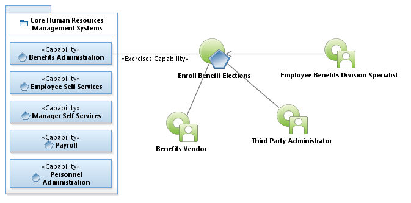
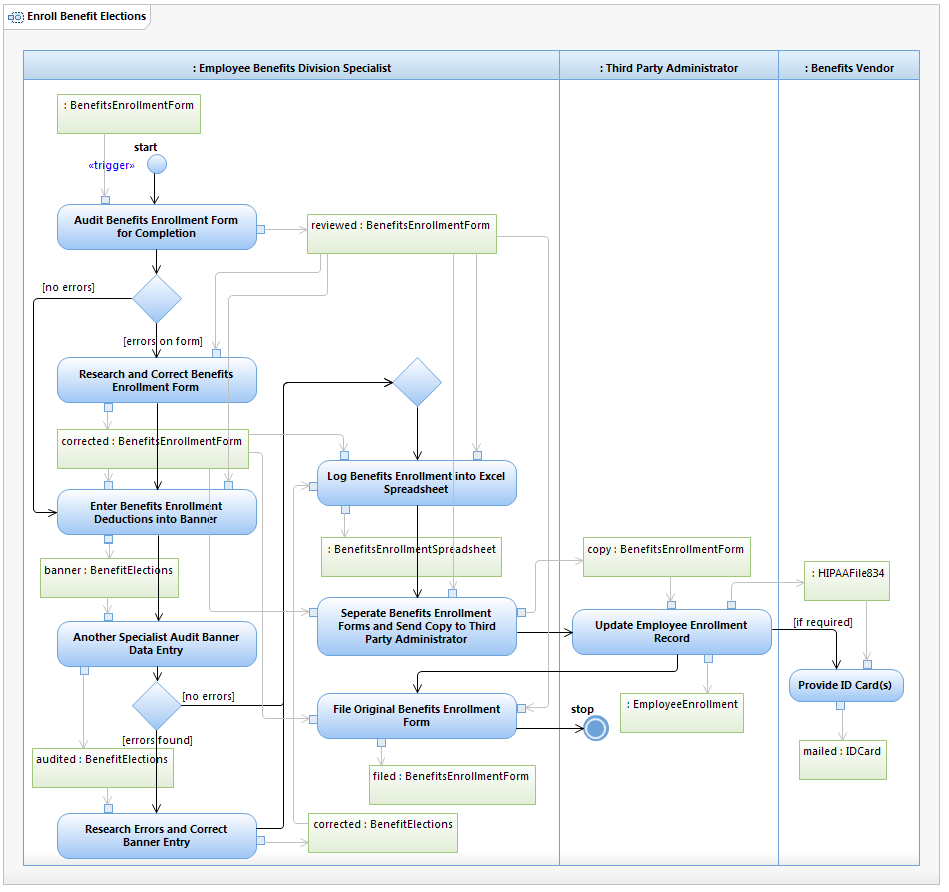

Use Case Model: Enroll Benefit Elections
Architect: Rob Byrd, Chief Enterprise IT Architect
Date Last Modified: 06/04/2012
User Review: Andrea Glasper, Benefits Specialist
Date: TBD
When a Benefits Enrollment Form is generated, the information is audited, corrected if required and entered into Banner by an Employee Benefits Specialist. Another Employee Benefits Specialist audits the Banner data entry and a copy is sent to the Third Party Administrator to update Employee Enrollment Record. ID Cards are mailed to employees or dependents when required.
Follow link to Role Definitions

Use Case Model: Enroll Benefit Elections

Activity Model: Enroll Benefit Elections